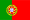
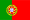

L’attività di Faunalia si basa su una fitta rete internazionale di collaboratori. Il core team è composto da:
 ¶
¶
e-mail: cavallini@faunalia.it
Tel/Viber/Line: +39-348-3801953
Skype: paolo.gg.cavallini
Hangout: paolo.cavallini@gmail.com
 ¶
¶
e-mail: renzo.cavallini@faunalia.it

Giovanni Manghi é licenciado em Biologia pela Universidade de Évora e trabalhou durante anos no campo da Biologia da Conservação, em particular na área da gestão e conservação de pequenos mamíferos carnívoros.
Giovanni Manghi tem mais de quinze anos de experiência na área da informática, em particular com as tecnologias relacionadas com a Web, tendo desenvolvido como programador freelancer vários sites, alguns dos quais para o Ministério da Educação Português e para a Universidade de Évora.
Desde 2004 abraça de forma incondicional a filosofia do FOSS (Free and Open Source Software), utilizando em exclusivo sistemas operativos GNU/Linux (em particular as distribuções Debian e Ubuntu) e ferramentas SIG Open Source: QGIS, Grass, PostgreSQL/PostGIS, MapServer, p.mapper, OpenLayers, entre outras.
Nos últimos anos envolveu-se pessoalmente na divulgação do Software Livre, tarefa que o levou a co-organizar cursos e encontros, bem como a fazer parte do recém criado capítulo Português da OSGeo, que anualmente dá vida às “Jornadas de Software Aberto para Sistemas de Informação Geográfica” onde a Faunalia.pt tem vindo a participar activamente.
Reside em Portugal desde 2002 e é sócio-fundador da Faunalia em Portugal.
Giovanni Manghi é:
Sócio e charter member da OSGeo “Open Source Geospatial Foundation” Membro do “IUCN Small Carnivore Specialist Group”.
e-mail: giovanni.manghi@faunalia.pt
Tel/Viber/Line: +39-348-3801953
Skype: paolo.gg.cavallini
Hangout: paolo.cavallini@gmail.com

Vânia Neves é licenciada em Biologia pela Universidade de Évora, desde Maio de 2002. Após alguns anos a desenvolver trabalho essencialmente na área da educação e formação ambiental, concluiu o Mestrado em Biologia da Conservação promovido pela Universidade de Évora.
O projecto de tese para obtenção do grau de mestre, que desenvolveu na Unidade de Biologia da Conservação da Universidade de Évora, teve como objectivos avaliar os efeitos relativos do habitat, densidade e características das rodovias, na mortalidade de mamíferos carnívoros e avaliar o impacto das rodovias na abundância e uso do espaço de mamíferos carnívoros. Esta investigação levou-a ao uso aprofundado de ferramentas SIG - em particular de modelação, análise espacial e geoestatística.
O contacto com a filosofia FOSS (Free and Open Source Software) levou-a a experimentar e usar desde então sistemas operativos e programas Open Source generalizados. Esta experiência, juntamente com o crescente interesse pela área dos SIG, fez com que se envolvesse directamente na co-organização de eventos relacionados com os SIG abertos ou livres.
É sócia-fundadora e gerente da Faunalia em Portugal, dal 2009.
e-mail: vania.neves@faunalia.pt
Tel/Viber/Line: +39-348-3801953
Skype: paolo.gg.cavallini
Hangout: paolo.cavallini@gmail.com